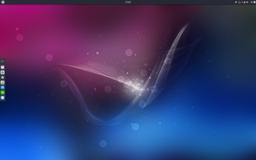

Ubuntu Budgie
 Ubuntu Budgie
Ubuntu Budgie  ist seit November 2016 das jüngste offizielle Derivat von Ubuntu. Es verwendet die namensgebende neue Desktop-Umgebung Budgie . Das Hauptaugenmerk der Entwickler liegt auf Einfachheit und Eleganz.
ist seit November 2016 das jüngste offizielle Derivat von Ubuntu. Es verwendet die namensgebende neue Desktop-Umgebung Budgie . Das Hauptaugenmerk der Entwickler liegt auf Einfachheit und Eleganz.
Geschichte¶
Die Desktop-Umgebung Budgie wird seit 2014 entwickelt (ursprünglich und hauptsächlich für die Rolling Release Distribution Solus, dem früheren Evolve OS Linux). Eine erste noch inoffizielle Ausgabe für Interessierte ist auf Basis von Ubuntu 16.04 als budgie-remix veröffentlicht worden. Die erste offizielle Ausgabe ist mit Ubuntu 17.04 als Ubuntu Budgie erschienen. Auch für andere Distributionen wie Arch, Debian, Gentoo und OpenSuse steht Budgie zur Verfügung.
|  |
| Ubuntu Budgie 17.04 |
Hardware-Anforderungen¶
Im Vergleich zu Ubuntu (Unity), Kubuntu und Ubuntu GNOME sind die Hardware-Anforderungen moderater, liegen jedoch oberhalb von Xubuntu. Die tatsächlichen Anforderungen an die Hardware sind abhängig von den individuellen Ansprüchen des Benutzers. Die hier beschriebenen Mindestanforderungen orientieren sich deswegen ausschließlich an der Software-Zusammenstellung, die Ubuntu Budgie standardmäßig mitbringt. Es werden dabei die gängigsten Anwendungsfälle Büroarbeit und Surfen im Internet betrachtet.
Hauptprozessor: Intel oder AMD 1.5 GHz ohne konkrete Angabe, sinnvoll jedoch Dual-/Multicore.
Grafikprozessor: mit einfacher 3D-Hardware-Beschleunigung.
Arbeitsspeicher: 2 GiB Minimum, für 64 bit mehr als 3 GiB empfohlen.
Festplattenspeicher: 60 GiB.
Programme¶
Ubuntu Budgie ergänzt die Desktop-Umgebung Budgie mit einer Reihe vorinstallierter Anwendungen (siehe auch Standardanwendungen). Nachfolgend eine Übersicht zur Orientierung:
| Standardanwendungen von Ubuntu Budgie | ||
| Bereich | Anwendung | Programm |
Büro | Textverarbeitung | LibreOffice Writer |
| Dokumentenbetrachter | Evince | |
| Tabellenkalkulation | LibreOffice Calc | |
Grafik | Bildbetrachter | Photos |
| Scanprogramm | Simple Scan | |
Internet | Webbrowser | Chromium |
| Geary | ||
| BitTorrent Programm | Transmission | |
| Multimedia | Audioplayer | Rhythmbox |
| Videoplayer | Videos | |
| Webcam | Cheese | |
System | Systeminformationen | Systemüberwachung |
| Netzwerkmanager | NetworkManager | |
| Paketverwaltung | Ubuntu Software | |
| Systemeinstellungen | Systemeinstellungen | |
Zubehör | Archivmanager | File Roller |
| Editor | gEdit | |
| Dateimanager | Dateien | |
| Terminalemulator | Tilix (alias Terminix) | |
| Taschenrechner | Calculator | |
| Dock | Plank | |
Diese Programme können jederzeit ersetzt oder durch weitere nachinstallierte ergänzt werden.
Links¶
Intern¶
Mythbuntu geht und Ubuntu Budgie kommt - Ikhaya, 11/2016
Budgie Remix ein bisschen genauer angeschaut - Ikhaya, 11/2016
- Erstellt mit Inyoka
-
 2004 – 2017 ubuntuusers.de • Einige Rechte vorbehalten
2004 – 2017 ubuntuusers.de • Einige Rechte vorbehalten
Lizenz • Kontakt • Datenschutz • Impressum • Serverstatus -
Serverhousing gespendet von